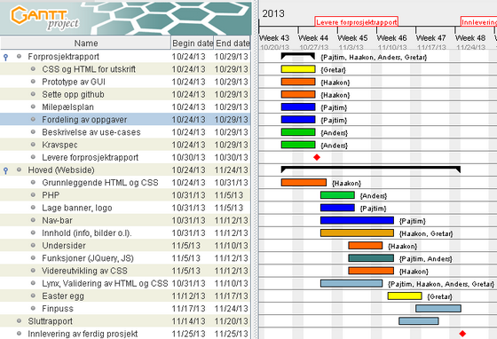

Nettsiden skal være en typisk hjemmeside for en fotballklubb, som holder informasjon om klubben.
Brukeren kann bruke navigasjonfeltet for at finne mer detaljerte opplysninger om:
På forsiden finner brukeren en del af andre undersider, dvs. siste nyheter, kort list over siste kamper og resultater, osv.
Hvis brukeren trykker på "Nyheter" knappen, kommer han til en underside som har alle nyheter, de nyeste på toppen. Hver nyhet har en overskrift og en kort tekst og brukeren kan klikke "les mer" hvis han er interessert.
Hvis brukeren trykker på "Kamper" knappen, kommer han til en underside som lister alle planlagte kamper og når de skal spilles.
Hvis brukeren trykker på "Resultater" knappen, kommer han til en underside som lister alle resultater i alle konkurranser.
Hvis brukeren trykker på "Tabell" knappen, kommer han til en underside som med opplysinger om...
Hvis brukeren trykker på "Lag" knappen, kommer han til en underside som har en tabell med opplysinger om spillerene, treneren, osv.
Hvis brukeren trykker på "Om oss" knappen, kommer han til en underside som har kontaktinformasjon øverst og klubbens historie under.
Her er prototypen av grensesnittet (klikk bildet for større versjon).
Beskrivelse om hvem skal gjøre hva finnes i Milepælplanen her under.
Mileplælsplan viser alle arbeidsoppgavene, hvem som har ansvaret for hver del og når de skal være ferdig (klikk bildet for større versjon).
Vi har valgt å bruke HTML, CSS JQuery og PHP. Vi velger å ta med JQuery fordi det kan lage fine effekter på vis mer funksjoner osv. PHP har vi valgt å ta med for å slippe å legge opp skallet på websiden på hver underside.
Her kommer beskrivelsen av arbeidsmetoden vi har valgt.
Vi har valgt å bruke GitHub, mest for å lære mer om hvordan man bruker det. Vi forstår det er et krafig verktøy som kan være lurt å kunne, men behersker det i dag ikke bra nok